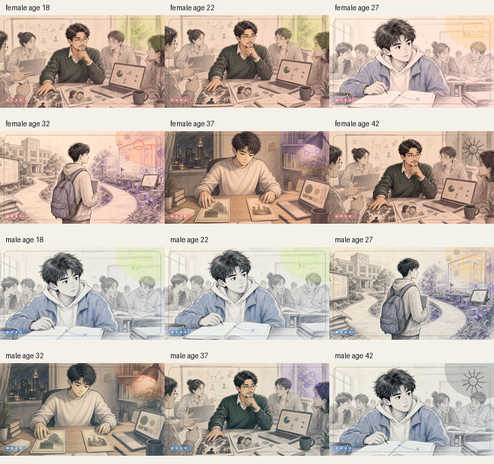

用户先选择 18 岁角色形象，输入称呼。头像资产来自 assets/characters。
Gaokao Life Simulator
一个用 18 张牌讲完高考后人生分岔的互动短剧系统
项目不是传统测评，也不是志愿填报工具。它把用户的高考起点、专业方向、家庭期待和 18 次 A/B 选择，组织成连续人生短剧，并在背后累计霍兰德 RIASEC 兴趣倾向，最后生成一张可分享的未来画像。

18
张人生选择牌，从 18 岁推进到 36 岁。
6
幕剧情结构，每 3 张形成一个小回合。
4
核心 API，负责卡牌生成、批量预取和结果页。
RIASEC
选择背后的隐藏职业兴趣侧写，不直接暴露给用户。
User Journey
用户实际体验
页面上的体验被压成五个动作：选形象、填开局、翻牌、生成结果、保存分享。复杂性主要藏在牌堆预取和结果合成里。
选择专业，填写省份、分数、家庭期待。前端开始 warmup，提前请求第一批牌。
setup-screen每张牌展示一个事故场景和两个选择。点击按钮或左右滑卡，都会进入同一个 choose() 流程。
每次选择写入 history，同时更新六项前端特质和隐藏 RIASEC 分数。
第 18 张结束后请求结果 JSON，并渲染职业概率、名场面、编年史、选择习惯和结果图。
result-sheet
Runtime Loop
前端牌堆如何跑起来
前端不是等模型一次性生成完整剧情，而是用即时卡、预热卡、桥接卡和后台补牌保证翻牌不中断。
第 7 年 / 18
两头夹击
导师点你上台，项目群同时爆雷。你要决定先保体面，还是今晚先救交付。
先冲展示，把公开场合稳住
先救交付，把结果救回来
资料变化触发预热
scheduleWarmup() 在表单输入后延迟触发，调用 /api/game/batch 预取前 3 张。这样用户点“开始验牌”时大概率已经有牌可用。
开局先进入游戏
startGame() 会重置状态，读取 profile，优先使用 warmup deck。如果还没拿到模型结果，就用 buildInstantFirstCard() 先把首牌亮出来。
后台补足牌堆
ensureDeckBuffer() 找到当前窗口里的第一张缺牌，按最多 5 张一批请求后端。用户看到的是连续翻牌，后台实际在分批填坑。
选择后重写未来
choose() 写入历史、应用特质增量、把后果交给下一张便签，然后 invalidateStaleFutureCards() 只保留少量未来牌，避免预生成剧情和真实选择冲突。
缺牌时用桥接卡托底
如果当前年份还没生成完，前端会临时放入 buildBridgeCard()，等远程卡回来再替换。模型失败时还能落到本地 mock，不至于白屏。
readProfile
warmup batch
deck buffer
renderDeck
choose
history + scores
showResult
Data Contract
一张牌到底由什么组成
模型输出的是 StoryStateCard。后端负责把它校验、裁剪和转换为前端更容易渲染的卡片结构。
故事层
year第几年，必须和接口请求一致。phase六幕中的阶段名，用于节奏控制。mainTrack本年主线，只能是life或relationship。lifeTrack学业、职业、家庭、健康、财务等现实状态。relationshipTrack必须带明确阶段，如暧昧升温、冷战后撤、体面告别。
展示层
summary下一张牌右上角便签，写上一年后果和另一条线近况。scene.title6 到 10 个汉字，像短剧集名。scene.body60 到 110 字，讲一个可拍出来的事故。a/b.title按钮动作，不能是抽象价值观。a/b.desc解释行动、优先级和代价。
测量层
a/b.riasec隐藏分值，前端不直接展示在卡牌上。consequence选择后的直接后果，下一张便签要承接。callbacks后续可回收的人、事、道具和旧梗。holland写入 history 后用于结果页三字母画像。delta前端六项特质的增量，主要用于本地兜底结果。
18 Card Arc
18 张牌的叙事骨架
项目的内容不是自由散点，而是固定六幕节奏。每幕 3 张牌，生活线和关系线交替推进。
开局上桌
被现实推着走，建立角色、专业场景和第一批 callback。关系线只种子出现，不抢主戏。
第一次上头
机会开始看起来能走通，出现高光和加速感，同时关系线开始有镜头。
第一次付代价
前面抢机会的代价落地，承诺撞车，玩家开始意识到不是每条线都能同时赢。
双线翻面
现实和关系互相反噬，过去那套做法不够用了，角色被迫重新判断自己。
压力做实
成长靠硬选择体现，前文埋下的梗和人物开始集中回收。
最终回响
不追求完美人生，而是给出明显成长后的正向落点和给 18 岁自己的回信。
LLM Boundary
AI 生成链路和校验边界
本地 Node 服务和 Cloudflare Worker 都承担同一个职责：把前端历史转换成模型输入，调用模型，校验 JSON，再返回可渲染数据。
模型拿到的不是空白 prompt，而是导演台本
后端会把 profile、storyCast、对应年份 outline、最近 6 条历史、最近 callback、最近场景标题、lifeTrack 和 relationshipTrack 一起给模型。模型只负责在约束内写下一张或下一批 StoryStateCard。
结构硬约束只输出 JSON，不输出 Markdown，不增加未要求字段。
手机字数预算标题、题干、选项、后果都有限长，后端再二次裁剪。
双线规则scene 只拍一条主线，summary 推另一条线。
RIASEC 轴A/B 的主分必须命中当年题纲里的两个类型。
连续性便签必须继承上一年实际 consequence，不能写 A/B 两种可能。
降级策略模型失败后重试，仍失败则走
mockResponse()。生成第 1 年单张卡。当前主流程保留此接口，但更依赖 batch。
按当前历史生成下一年单张卡。也是保留接口。
前端主流程使用的核心接口。按 startYear/count 批量生成最多 5 张，服务于预热和后台补牌。
18 张结束后生成最终结果页 JSON，包含标题、职业概率、名场面、时间线和选择建议。
Hidden Scoring
霍兰德侧写如何从选择里长出来
RIASEC 在卡牌阶段隐藏，结果页才把它翻译成三字母代码、雷达图、职业可能性和解释文案。
每个选项自带隐藏分
后端要求每个选项主分 4 到 6 分，副分最多 1 项且不超过 2 分，总分不超过 7。这样结果不是从按钮文案猜出来的。
历史选择聚合成三字母
getHollandScoresFromHistory() 把 18 次选择里的 holland 累加，再取前三名组成代码，如 ICE、ESA。
结果页负责解释，不做诊断
页面强调“这局更像哪几类人”，避免“你天生就是某类人格”的判定口吻。它是娱乐和专业理解参考，不是心理测评。
Code Map
主要文件职责
项目体量集中在少数几个文件里。接手时最好按这张表读，而不是从 HTML 顶部一路硬翻到底。
主前端。包含入口、设置、翻牌、结果页 UI，状态对象，牌堆缓存，选择处理，RIASEC 聚合和保存结果图。
本地 Node 服务。读取环境变量，提供静态文件，代理模型 API，校验年度卡、批量卡和结果页。
Cloudflare Worker 版本。生产环境跑同一套 API 逻辑，静态资源走 Worker Assets。
Prompt 和 18 张黄金题纲的事实源，构建 annual、batch、result 三种模型输入。
提示词实验台。用于批量跑不同策略、查看 QA、耗时、RIASEC 分布和结果页输出。
协议文档。定义故事层、展示层、测量层，以及字段预算和 RIASEC 计分原则。
18 张牌的六幕节奏蓝图。解释每幕该推进什么情绪和冲突。
角色、卡牌插画、RIASEC 公仔、Figma 导出图和预览图。当前视觉体验高度依赖这些本地资产。
Current Shape
当前系统的真实形态
代码和审计文档都指向同一个结论：这是一个混合编剧系统，优点是稳，代价是有时会出现“接缝”。
模型生成卡牌和结果页；前端还会 normalize、补便签、插固定卡、做桥接卡、推断缺失的 RIASEC。
未来卡在用户选择前就生成，不能假设玩家未来选 A 或 B，所以批量卡天然更偏“趋势型”。
前端有固定插卡机制，用于关键节点兜底。它能稳住体验，也可能让多次重玩更容易重复。
后端会拦截缺字段、重复场景、关系阶段不清、RIASEC 分值错误等问题，但前端仍会做二次加工。
模型结果优先。若内容缺失或异常，前端还能基于专业、特质、历史选择生成 fallback 片段。
页面声明结果仅供互动娱乐与专业理解参考，不构成志愿填报建议，也不替用户做决定。
Run And Deploy
运行和部署方式
本地和生产是同构思路：静态前端加一个模型代理 API。区别是本地用 Node，生产用 Cloudflare Worker。
本地预览
复制 .env.example 为 .env，填入模型 key 后运行 npm start。不想调用模型时用 DEEPSEEK_MOCK=1 npm start。
生产部署
wrangler.toml 指向 worker.js，静态资源目录为 ./public，/api/* 先走 Worker。
域名和观测
Worker 配置了自定义域名 gaokao.dsxzai.com，并开启 Cloudflare observability，用于查看请求日志。